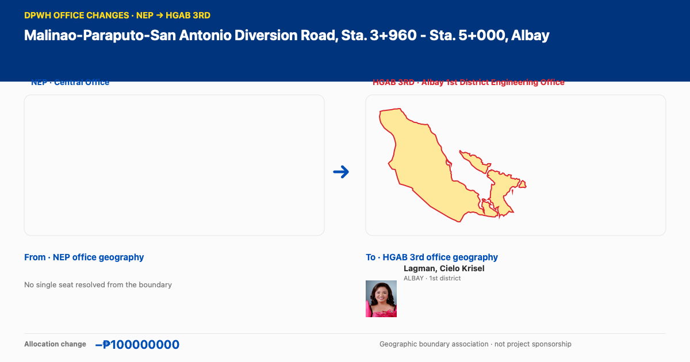

Office change · Malinao-Paraputo-San Antonio Diversion Road, Sta. 3+960 - Sta. 5+000, Albay 
Geographic representatives associated with mapped DEO boundaries Lagman, Cielo Krisel To · HGAB 3rd office · ALBAY · 1st district House profile ↗ NEP Central Office → HGAB 3rd Albay 1st District Engineering Office · allocation change −₱100,000,000. Geographic representatives are associated with mapped DEO boundaries, not project sponsorship. These geographic associations indicate mapped boundary coverage, not project sponsorship.
Open the DPWH office changes explorer ↗ Disclaimer. These are preliminary, document-based observations, not allegations or findings that any person, office, contractor or other entity acted unlawfully. A flag, unmatched record, repeated amount or title, price or location outlier, or missing document is a prompt for review; it does not establish intent, responsibility, benefit, overpayment, duplicate scope or wrongdoing. Names and geographic or district associations indicate possible coverage only, not sponsorship, authorship, control, receipt or personal involvement. A DEO-to-legislative district crosswalk, where used, is a preliminary administrative or geographic association. It does not establish where a project will be implemented, who proposed or requested it, whether it was added during legislative deliberations, or who sponsored, received or controlled funds. Source documents, data completeness, parsing, matching, categories, timing and boundaries may affect results. Verify cited primary records and seek relevant context before drawing or publishing conclusions.